С НАСТУПАЮЩИМ
Много всего
Вчера, как и обещано, известный покровитель иллюстрации Андрей Бартенев открыл в галерее Зураба Церетели на Пречистенке выставку Катыхина. Кроме Катыхина там можно увидеть Протея Темена и других необыкновенно прекрасных людей.
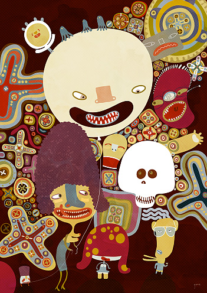
Посмотрите, как Оксане Гривиной к лицу бижутерия от Ани Всесвятской. Должен сказать, десять коллективных выставок не дадут почувствовать общего движения так, как одна открытая цитата. К слову, а то что-то уж очень часто последнее время всплывает эта тема – выношу, что называется, из комментариев. То, что Катыхин заимствует что-то у Бейзмана, Аня Всесвятская - у Хундертвассера, Яна Клинк - у Бердслея и т.д. - ровным счетом ничего не значит. Вернее, это просто ингредиент фирменного блюда, пусть и тот, которым оно покрыто сверху. Неважно, на своем или чьем-то еще художник говорит языке, если ему есть, что сказать. Больше того, новые языки появляются как самоцель, и только потом приходят те, кто напишет на этих языках стихи. Об этом я тоже, впрочем, уже говорил.
Что касается Катыхина, к тому, что я сказал про него раньше, имею добавить только то, что акрилы метр на метр – это совсем не то же самое, что гифы 300 на 300. В них проявляется какая-то иначе невидимая жуть. Пушистые черные зверьки превращаться в раззявленные пасти, вдруг оказывается, что у веселых живых бобов из глаз идет огонь, и так далее. Видеть духов, я думаю, довольно страшно, даже – и особенно – тогда, когда они пляшут и хохочут.
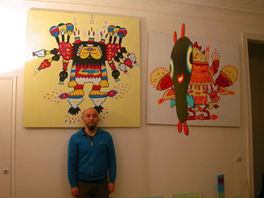
Сходите, и постарайтесь, чтобы вас пробрало. Быть зрителем - это квалифицированный труд, и я полагаю, что для иллюстратора самый важный.
Смотрите в оба. Видьте. До встречи в новом году.
На прощанье букетик ссылок.
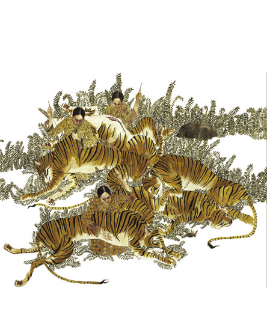
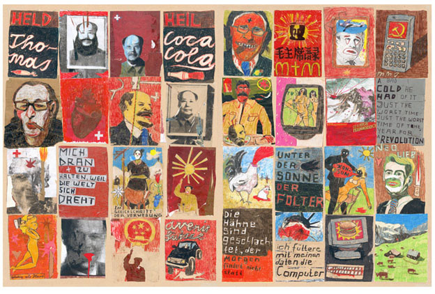
Eric White, кривой гиперреализм, очень уважаю
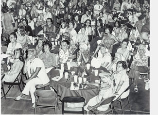
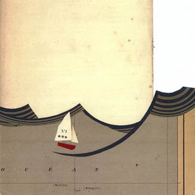
Выдающимся нашим коллегам Ляпунову и Эрлих, известным как peopletoo, чуть-чуть бы, с позволения, не мешало бы рванины вот этой вот: при всем восторге, очень уж оно все аккуратненько.
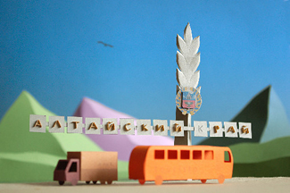
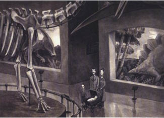
Не ново, но мило. Там еще сколько-то есть полезного
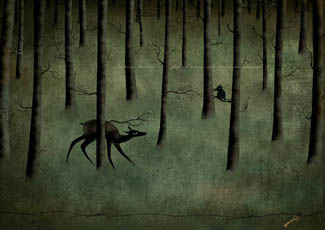
Местами очень миленько, в массе слишком девичье, на мой вкус.
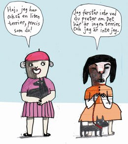
Тот случай, когда дальше лезть необязательно, но здесь порыться можно.
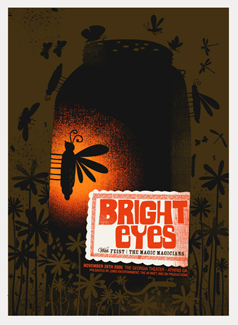
С самого начала хочу ее повесить. Вообще, за примерами удачного сочетания типографики с иллюстрацией лучше всего ходить на gigposters.com
Paul Roden & Valerie Leuth
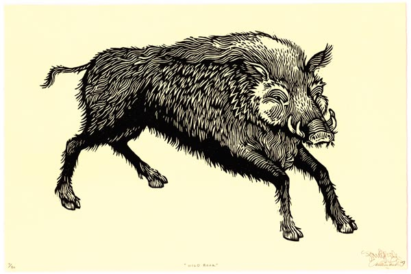
Philippe Weissbecer – к сожалению, только одна картинка нашлась
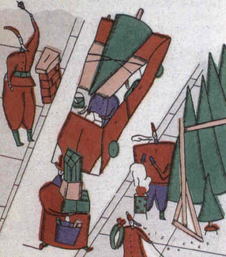
Andrew James Jones (и еще вот тут) необыкновенная гадость, 18+
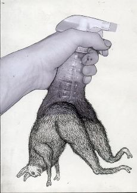
К слову, смешная новость, для тех, кто не читает illustrationmundo (здесь таких нет, разумеется): Томер Ханука переборщил. И для них же: Интервью с Ирой Троицкой